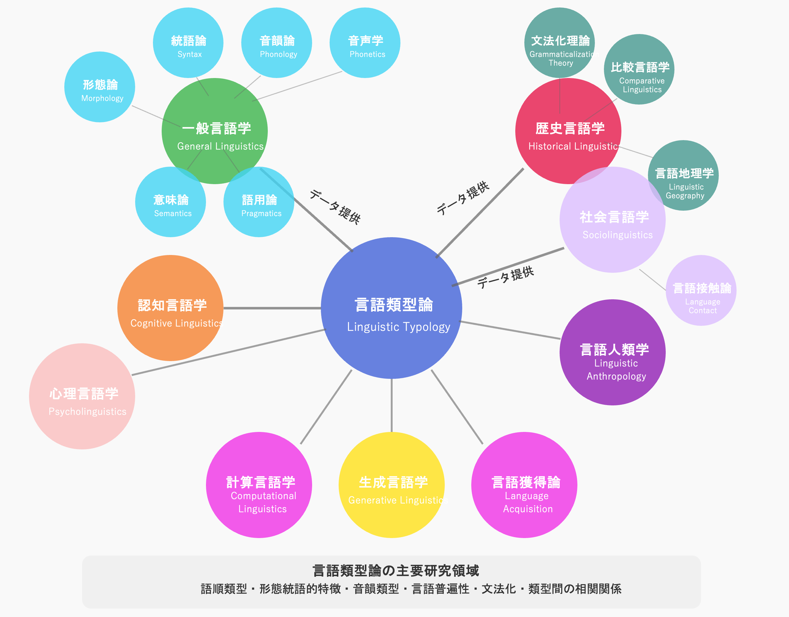

スライド 1/20
世界の母語話者がいる言語の分布図（2022年、Ethnologue）
言語類型論（言語類型学、Linguistic Typology）は、世界の言語の構造的な類似点と相違点を体系的に研究する言語学の分野である。
言語類型論の特徴
- 記述的アプローチ：個別の言語を詳細に記述
- 比較的アプローチ：言語間の共通性と差異を分析
- 系統に依存しない分析：言語系統よりも構造特徴に注目
- 普遍性の探求：言語の普遍的パターンを特定
主な研究テーマ
- 言語の構造パラメータの特定と分類
- 言語特徴の分布パターンの解析
- 言語の普遍的制約の発見
- 言語特徴間の含意関係の分析
- 言語変化の類型論的パターンの研究

言語類型論は比較言語学、記述言語学、理論言語学、社会言語学などと相互に関連し、言語学全体に多大な貢献をしている。主な特徴として:
- 系統論との違い：言語の歴史的関係ではなく、構造的特徴の類似性に注目
- 理論言語学との関係：経験的データに基づいて言語理論の妥当性を検証
- 認知言語学との接点：言語構造と人間の認知能力の関係性を探究
言語類型地図（Linguistic Typological Atlas）は、言語の構造的特徴の地理的分布を視覚化したもの。
目的
言語の構造特徴と地理的分布の関係性を明らかにし、言語の接触、変化、拡散のパターンを理解する
対象
音韻論、形態論、統語論、意味論などの言語特徴
方法
特定の言語特徴を地図上にプロットし、地域的パターンを特定
成果
言語連合（Sprachbund）の特定、言語変化の経路復元など
言語類型地図は定性的分析と定量的分析を組み合わせた研究手法であり、言語学者が言語の多様性と普遍性を理解するための重要なツールである。
初期の発展
- 19世紀末〜20世紀初頭: 方言地図の出現
- Jules Gilliéron: フランス言語地図 (1902-1910)
- Georg Wenker: ドイツ言語地図 (1888-)
- 1950年代: Joseph Greenbergによる言語類型論の体系化
現代的発展
- 1980年代: WALSプロジェクトの構想
- 2005年: WALSの初版出版（マックスプランク進化人類学研究所）
- 2008年〜現在: WALSオンライン版の展開
- 2010年代〜: コンピュータ技術の導入と大規模データベース化
日本は方言研究と言語地理学において豊かな伝統を持っています。
日本言語地図（LAJ）
1957年〜1974年に国立国語研究所によって実施された大規模調査。全国約2,400地点の方言を300項目調査し、全6巻の地図集として刊行。
方言文法全国地図（GAJ）
1989年〜2006年に刊行された、文法現象に焦点を当てた初の全国規模の言語地図。助詞・活用形・敬語などの文法項目を全国807地点で調査。
LAJDB・GAJDB
日本言語地図と方言文法全国地図のデータベース化プロジェクト。現在はオンラインで検索・閲覧可能。
日本の方言地図研究は、方言の連続性と境界線（等語線）の調査に重点を置き、方言区画論や言語変化の研究に大きく貢献しています。
現代では計算言語学的手法を取り入れた方言コーパスの構築と分析も進んでいます。例えば、国立国語研究所の「日本の消滅危機言語・方言の記録とドキュメンテーションの作成」プロジェクトや「方言コーパス」の構築などが挙げられます。
WALS
(World Atlas of Language Structures)
2,679言語、192の言語特徴を網羅する最大規模のデータベース。オンラインで無料公開され、インタラクティブな地図作成が可能。
SAILS (South American Indigenous Language Structures)
南米先住民言語に特化した類型論的特徴の地図。固有の文化的・歴史的文脈を考慮した設計。
APiCS(Atlas of Pidgin and Creole Language Structures)
ピジン・クレオール言語76言語の構造的特徴を130項目にわたって収集したデータベース。言語接触研究の重要資料。
2,467言語の文法特徴を収集した比較言語学データベース。特に形態統語論的特徴に焦点。
これらのプロジェクトはオープンアクセス化とデジタル技術の活用により、言語類型論研究の民主化と高度化に貢献しています。
AUTOTYP
言語特徴の地理的・系統的分布を研究するためのデータベース。特に形態統語論的特徴に焦点。
ASJP (Automated Similarity Judgment Program)
7,000以上の言語・方言の語彙リストを比較し、系統関係を推定するプロジェクト。
子音体系
- 子音目録のサイズ（小・中・大）
- 特殊な子音（喉頭化音、反り舌音など）
- 子音クラスターの複雑さ
母音体系
- 母音目録のサイズと質
- 長短対立、緊張-弛緩対立
- 鼻母音の有無
超分節的特徴
- 声調システムの種類
- アクセントパターン（強勢・ピッチ）
- イントネーションシステム
形態論的類型
- 孤立語（中国語など）
- 膠着語（日本語、トルコ語など）
- 屈折語（ラテン語、アラビア語など）
- 複統合語（グリーンランド語など）
名詞の形態論
- 格標示システム
- 複数形成
- 名詞クラス/性
- 所有標示
動詞の形態論
- 時制・相・法のマーキング
- 一致標示
- 態（ヴォイス）の形態論
- 証拠性標示
形態的プロセス
- 接辞添加（接頭辞、接尾辞）
- 重複
- 内部屈折（アラビア語など）
- 抱合（アイヌ語など）
名詞クラス（文法性）システムは言語類型論で特に注目される特徴で、その地理的分布には明確なパターンが見られます。
類型パターン
- 性別システム：男性・女性（・中性）によるクラス分け
- 意味的システム：有生/無生、人間/非人間などの意味による分類
- 形式的システム：音韻的特徴による分類
- 複雑なクラスシステム：バントゥー諸語のような多数のクラス
- クラスなし：文法的な名詞分類を持たない言語
地域的特徴
- インド＝ヨーロッパ語族：2〜3クラスの性別システムが一般的
- アフリカ（特にバントゥー語圏）：複雑な名詞クラスシステム
- 東アジア：文法的な名詞クラスを持たない言語が多数
- オーストラリア：複雑な意味的クラスシステム
- 北米先住民言語：多様な名詞分類システムが存在
語順パターン
- 主要部と補部の順序
- 基本語順（SOV, SVO等）
- 修飾語と被修飾語の順序
その他の構文
- 否定表現
- 疑問文の形成
- 焦点化・話題化
- 受動構文と態変換
世界の言語の基本語順分布は、言語類型地図の最も顕著な成功例の一つです。
| 語順型 |
特徴 |
代表的言語 |
地域的分布 |
| SOV |
主語-目的語-動詞 |
日本語、トルコ語、ペルシア語 |
アジア、オセアニア、南米の一部 |
| SVO |
主語-動詞-目的語 |
英語、中国語、スワヒリ語 |
ヨーロッパ、アフリカ、東南アジア |
| VSO |
動詞-主語-目的語 |
アラビア語、アイルランド語、ハワイ語 |
中東、ケルト語圏、ポリネシア |
| VOS |
動詞-目的語-主語 |
マダガスカル語、ツォツィル語 |
マダガスカル、中米の一部 |
| OVS/OSV |
目的語が先行 |
ヒシカリアナ語、ワオラニ語 |
アマゾン流域（稀） |
時間表現
- 時制体系
- 相（アスペクト）の区別
- 絶対時制 vs. 相対時制
空間表現
- 空間指示語の体系
- 前置詞/後置詞の意味領域
- 絶対座標系 vs. 相対座標系
語彙領域
- 色彩語彙
- 親族用語体系
- 数詞システム
- 身体部位の命名
文法化された意味
- 証拠性（情報源）
- 話法（ムード）
- 定性・特定性
- 敬意表現
特徴間の相関関係は言語類型論の中心的な研究テーマであり、言語類型地図はこれらの相関を地理的文脈で理解するのに役立ちます。
使役交替言語地図とは
使役交替言語地図（The World Atlas of Transitivity Pairs, WATP）は、世界の言語における形態的関連のある有対動詞を収集した地理類型論的データベースです。
例えば、日本語の自動詞「開く」と他動詞「開ける」のようなペア：
- 「ドアが開いた」（自動詞）
- 「太郎がドアを開けた」（他動詞）
国立国語研究所共同研究プロジェクト「述語構造の意味範疇の普遍性と多様性」（リーダー：プラシャント・パルデシ）によって構築され、約80名の研究者から提供された約95言語のデータを収録しています。
WATFの機能と特徴
使役交替言語地図では、以下の2つの観点から有対動詞の形式的関係を可視化します：
- 個々の動詞対の派生型の選好：意味と形式の類像性の可視化
- 各言語の派生型の選好：各言語の「類型論的な特徴づけ」の可視化
これにより、Haspelmath (1993) の提唱する派生の方向の動機づけに関する類像的な説明を検証することが可能です。
派生パターンの例
- 自動詞から他動詞への派生：日本語「曲がる→曲げる」
- 他動詞から自動詞への派生：日本語「割る→割れる」
- 等価派生：どちらも同等に派生（「沸く/沸かす」）
- 同形：英語「break」（「壊れる/壊す」両方の意味）
研究への貢献
このデータベースは、言語類型論研究、特に動詞の自他交替に関する通言語的研究に重要な貢献をしています。言語間の共通点と差異を明らかにし、普遍的なパターンと言語特有のパターンを特定することができます。
引用情報：国立国語研究所 (2014)『使役交替言語地図』（https://watp.ninjal.ac.jp）
- データ収集: 文法記述、フィールドワーク、既存の研究からデータを収集
- 分類と符号化: 言語特徴を体系的に分類し、データベースに符号化
- 地理座標の割り当て: 各言語に地理的座標（緯度・経度）を割り当て
- 視覚化: GISソフトウェアを用いて特徴の分布を地図上に表示
- パターン分析: 分布パターンを統計的手法で分析
- 解釈: 歴史的・社会的・地理的文脈を考慮して分布を解釈
近年では、機械学習やベイズ統計などの計算的手法を用いて、より精緻な分析や欠損データの予測なども行われています。また、インタラクティブな可視化技術により、ウェブ上で動的に地図を操作することも可能になっています。
言語学的応用
- 言語接触の研究: 言語特徴の拡散と借用のパターンを特定
- 言語史の再構築: 言語変化の歴史的経路を推測
- 言語普遍性の検証: 普遍的な言語特徴と地域的特徴の区別
- 言語系統の研究: 系統分類と類型論的類似性の関係を分析
学際的応用
- 言語多様性の保全: 言語多様性のホットスポットを特定し保全活動に貢献
- 計算言語学: 言語モデルの改善と多言語NLPシステムの開発
- 認知科学: 言語構造と認知プロセスの関係解明
- 人類学・考古学: 人口移動や文化拡散のパターン推定
言語類型地図は、言語の多様性とその背後にある規則性の両方を理解する上で重要なツールであり、人間言語の本質に関する洞察を提供します。
計算手法
- 自動特徴抽出: 機械学習を用いた言語コーパスからの特徴抽出
- 予測モデリング: 未記録の言語特徴を予測するベイズモデル
- 系統言語学的手法: 言語特徴の進化を系統樹でモデル化
- 空間統計学: 言語特徴の地理的分布パターンの定量分析
技術的展開
- インタラクティブツール: ウェブベースの対話型言語地図
- クロスリンギスティックNLP: 類型論的知識を活用した多言語処理
- 大規模データベース: クラウドソーシングによるデータ収集と検証
- 3D/4D可視化: 時間次元を含めた動的言語地図の開発
計算言語学的アプローチにより、従来の人手による分析では見えなかった複雑なパターンや相関関係を発見することが可能になっています。
現在の課題
- サンプリングバイアス: 欧米の研究で記録された言語に偏り
- データの粒度と比較可能性: 言語記述の質と詳細さの差異
- 消滅危機言語のデータ不足: 世界の言語多様性の一部しか記録されていない
- 多次元的特徴の表現: 2次元マップでの複雑な特徴の表現の限界
今後の展望
- 大規模言語データとAI: ディープラーニングを活用した分析手法の発展
- 多次元可視化技術: VR/ARを用いた新しい視覚化アプローチ
- 市民科学: 非専門家も参加できる言語データ収集プラットフォームの構築
- 言語復興・保全: 消滅危機言語の記録と復興への応用
言語類型地図研究は、テクノロジーの発展と学際的アプローチにより、新たな段階に入りつつあります。言語の多様性と普遍性の理解を深めるだけでなく、言語の保全や復興にも貢献することが期待されています。
主要なポイント
- 言語類型地図は言語の構造的特徴の地理的分布を視覚化する強力なツール
- WALSをはじめとする大規模プロジェクトにより研究が発展
- 日本にも豊かな方言地図の伝統がある（LAJ、GAJなど）
- 音韻論、形態論、統語論、意味論にわたる様々な特徴を地図化可能
- 言語接触、言語変化、言語系統研究に重要な知見を提供
- 計算言語学との融合により新たな研究手法が開発中
主要参考文献
- Dryer, M. S., & Haspelmath, M. (Eds.). (2013). The World Atlas of Language Structures Online. Leipzig: Max Planck Institute for Evolutionary Anthropology.
- Nichols, J. (1992). Linguistic Diversity in Space and Time. Chicago: University of Chicago Press.
- Croft, W. (2003). Typology and Universals (2nd ed.). Cambridge: Cambridge University Press.
- 大西拓一郎 (編) (2016). 新日本言語地図. 朝倉書店.
- Bickel, B. (2015). Distributional typology: statistical inquiries into the dynamics of linguistic diversity. In B. Heine & H. Narrog (Eds.), The Oxford Handbook of Linguistic Analysis (2nd ed., pp. 901-923). Oxford University Press.